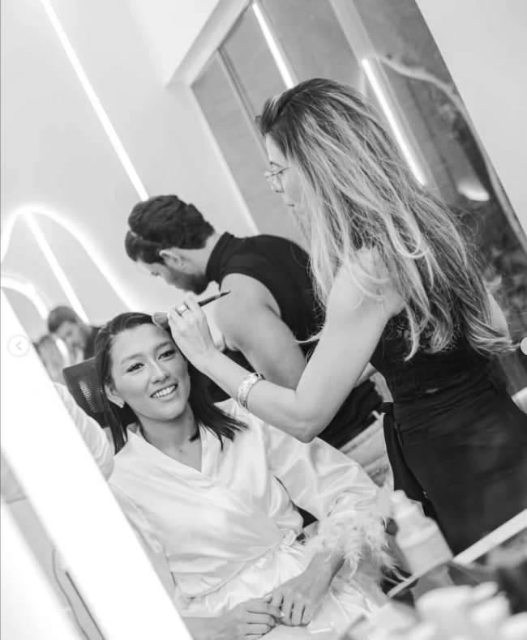

Cada rosto,
uma assinatura.
Noivas e produções para festa, formatura e ensaio. Trabalhos reais do estúdio, em São Luís.

Nenhuma fotografia nesta categoria por enquanto.
Quer um look assim
para o seu dia?
Manda a data e o tipo de evento no WhatsApp. A Fran responde com a disponibilidade da agenda.
Agendar meu horário